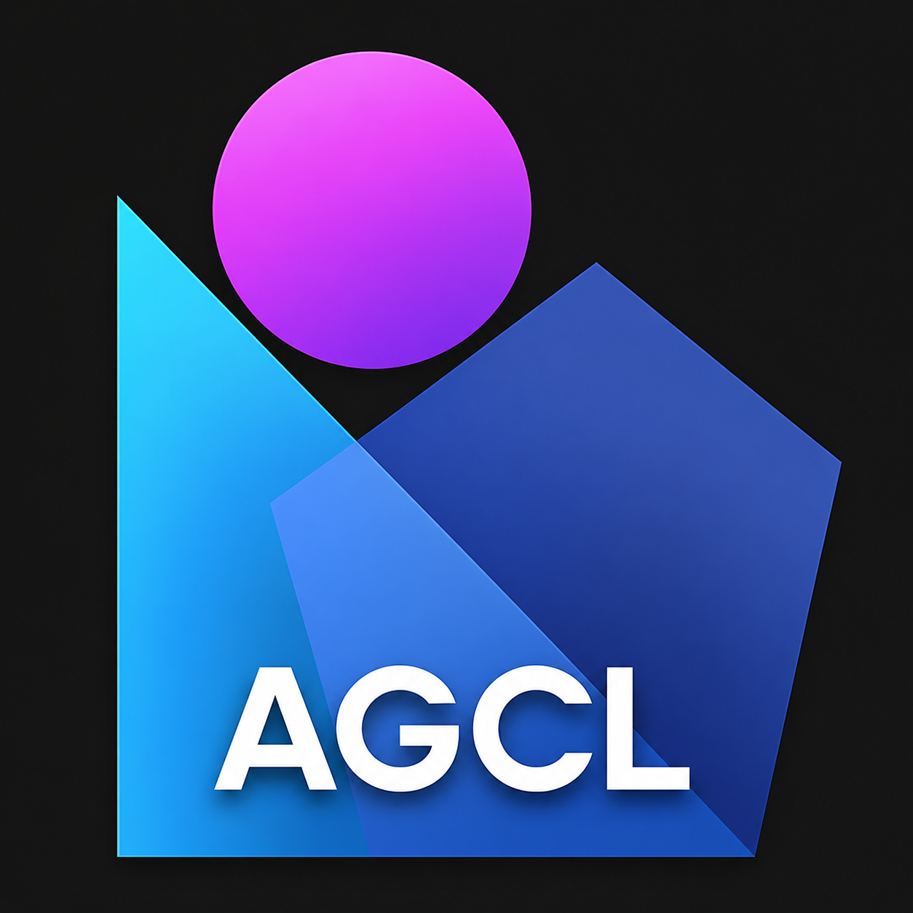

Connect to a local AGCL node. Run
python main.py node --port 9876 --cors "*" on the host
machine — the bearer key is printed once on startup. Stays in this
browser's localStorage; never sent anywhere else.
No CORS? Browser blocking mixed content? See docs/web-console.md.